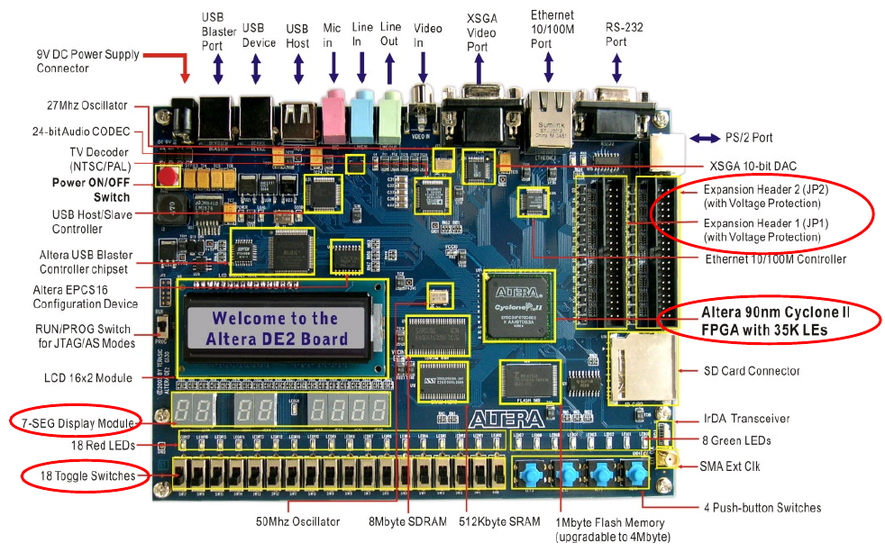

Mechtron 3TB4: Embedded Systems Design II
Tutorial Lab 2
Building
a Hardware Interface using an FPGA
Reports Due:
At the start of your lab sessions next week (along with the pre-lab report for the lab)
Goals:
- Introduction to Quartus II Software and how to use different facilities provided by it
- To learn how to describe simple circuitry in Verilog HDL
Note: The following documents may help you with your lab. Please go over them at your own convenient time, in addition to the class notes:
Lab Equipment and Software:
In this tutorial you will be introduced to the new development board that we will use for future labs.
Altera’s Development and Education (DE2) board is built around an FPGA device, which can be programmed to implement an arbitrary logic circuit.
The FPGA is connected to many on-board peripherals, as shown in figure 1 Altera DE2 Board. Elements encircled in the figure will
be used in this tutorial and lab2.

| Figure 1: Altera’s DE2 Board |
- Peripheral connections
- This device contains
many peripherals that can be used with the FPGA. The DE2_pin_assignments.csv provides
a pin-map to connect the FPGA's output ports to the surrounding peripherals. For this lab, you will be required to use the DE2 pin assignments
to interface with the peripherals of the DE2 development board.
- Cyclone II FPGA
- will be
used to implement the hardware logic. Note that device support for the Cyclone II was dropped as of release 13.1 of
the Quartus II free web edition.
-
Software environment
- consists of the
Quartus II CAD Tool.
As a part of the preparation, you will complete a tutorial that will introduce you to the Quartus II user
interface.
Activities
Pre-tutorial
The following activities must be completed by each student independently at your convenient time before attending this tutorial.
- Install the free web edition of Quartus II software on your home computer by downloading it from Altera’s Web site:
https://www.altera.com/downloads/download-center.html
- Make sure you download version 13.0 to match the software installed in the lab.
- Complete sections 1 through 6 of the Quartus II Introduction Using
Verilog Design tutorial available on course web page. You do not have to complete sections 7, 8 and 9 because you do not have the DE2 board at home.
In the Lab:
In the lab you need to work in groups. Using one of the computers in the lab, create a new Quartus project, as you learned in the “Quartus II Introduction Using Verilog Design" tutorial.
- Connect the DE2 board to its power supply.
- Follow section 7 of the tutorial for pin assignment. Alternately, you can import pin assignments from
the DE2_pin_assignments.csv file provided on
course web page. Before compiling, make sure that all unused pins are reserved as Inputs tri stated. This option is available
under Assignments->Device->Device and Pin Options->Unused Pins.
- Complete sections 8 and 9 of the “Quartus II Introduction Using Verilog Design" tutorial that you used in
preparation for this tutorial.
- Show the compiled circuit to one of the TA's and take a screen shot for including in your report.
- Use both the functional simulation as well as timing simulation to ensure the intended functions of the circuit.
- Show the result of simulation to one of the TAs and take screen shots for your report.
Report:
Describe what you did in this tutorial and include the screen shots taken during various experiments along with the pre-lab report as described
in lab2 document at the start of lab2 next week.